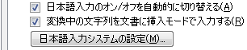
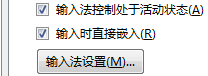

为啥本篇编号从零开始，因为已经发布的那些随笔都是十年前的内容，时过境迁。尤其是IT相关内容，按十八个月一代计算，到现在已经「六代人」过去了也，「君子之泽五世而斩」也该够了。所以这篇「说明」其实是「后记」，替十年前的自己做个总结而已。
这《囧斋随笔》是2007年，也就是「天下无猪」那一年，春节过后，在起点开的「书」，因为当时站点上有「杂文随笔」类型，顺手放上去了，简介是这样的：
馀老去习懒，读书不多，意之所之，随即纪录，因其后先，无复诠次，故目之曰随笔。 和谐丁亥，幽州囧斋房东。 注： 壹、洪迈这么说是谦虚，咱这么说是实话，别拍我。 贰、囧斋是咱书房的名字，自称「居士」「主人」啥的都太俗，如今流行叫「房东」。
而已经出现的分类有「电子生涯」「熊崽落水」「历史尘埃」三个，那也是因为在起点开的三本「书」，其中《电子生涯》都知道是逗哔时期的逗哔作品，而《有只熊崽跌落水》《历史唯物主义的尘埃》两本仅仅有个书名而已并没有实质内容。详情在《范版西幻设定集》作品相关的《缘起》部分已经说过了，这里略过。
下面先把2008年准备写的《关于输入法（八）》的草稿部分贴上来，看着肯定很混乱：
今天又决定了，在谷歌拼音更新之前，只保留QQ拼音，哪怕是Beta5版。 做这个决定也不算痛苦，在这三个月便是一代的IT行业中，半年没动静毫无疑问可以退休了。
QQ拼音1.1Beta3，基本上继承了谷歌和搜狗的优点，除了…… 在日语环境下默认装上英语美国布局？不需要，Beta4就没有了，也许是错觉？ 无法使用小键盘数字选词，和搜狗一样；而谷歌和微软拼音则不然。这个细节究竟是个优点还是缺点？还是允许设置的好。
微软输入法为啥后来名称都换成“Microsoft Office IME”并且随着Office发布呢？因为Office有语言选项：“输入法直接嵌入”。日语MSIME和ATOK都支持，而中文，只有微软拼音支持，第三方输入法都不支持。别以为这个功能没用，在Word中，输入但未确定的同时，内容就会自动变更以预览确定后（文字上屏）的情况。在Excel中，甚至输入一个假名就可以实现自动完成的猜测。
搜狗拼音输入法3.3正式版，变本加厉的往低幼方向发展。安装的时候就提示选择网游词库，这个举措已经很明显的标识出其定位。但咱总不能仅仅因为这个原因就对其视而不见，试一试，还是同步问题。卸载，放弃。
特殊符号可以有重复的缩写……谷歌拼音没有，微软拼音则不可能（不能发音的单字没有任何意义，这就是采纳带声调的标准读音规范的输入法的缺陷之处）。
输入法窗口应该继承环境字体（为啥？） 笔记本是XGA屏幕，Word用100%比例刚刚好。而台式机是宽屏：Word窗口内要放大到150%才刚好合适，看着也舒服。 但是搜狗拼音是允许设置字体和字号，谷歌拼音则预先定义了大中小。都不能随着环境字体变化。问题是，还有个网络同步功能，所有设置共享。台式机和笔记本使用同样大小的字体……总有一边不适合您。
快捷键看提示，中文版Word+日语键盘，不知道是个什么样？ Excel中，使用Ctrl+分号插入当前日期文本，使用Ctrl+冒号插入当前时间文本。所以……请注意键盘布局！
快捷键用的，左手抽筋，无名指和小拇指 利用自动更正选项实现输入缩略语？ 创建一个四条边完全不同的边框？意味は何？
加拿大法语键盘 国际键盘
5月8日，联合金山推出“谷歌金山词霸” 谷歌拼音已经是GoogleTools中文版的一部分 这个呢？也会成为其中之一么？ 其中办公套装是StarSuite， 能不能和GoogleDocs联动？ 作为竞争对手的微软，可是已经推出了Office
Live的Beta版了，安装个插件就可以在Office2003和2007当中直接使用。 还有，虽然KDE4已经推出，还不停升级，但是KOffice2还没动静，否则，也会掺和进来？ 看来情况越来越有趣了……
对中文输入法功能的建议和希望。
U*ix和Mac OS X的输入法。 虽然……眼下仍选择谷歌输入法的原因。
◆注：
1， 至今为止DOS仍然有生命力，在许多应用中，比如收款机、某些行业打印单据的终端，使用DOS下的程序成本低，速度快，维护简单——用一句话讲，足够了。正如针式打印机那样，距离退出舞台还远着呢。另外，“吴晓军2.13”是规范的名称，应该这样称呼。就像咱现在正在用“Microsoft”Word
for “Microsoft”Windows码字一样。虽然平时聊天只说2.13也不会被误会，但……还是养成良好习惯比较恰当：你看SQL Server明明有好几套，“Microsoft”一套、“Sybase”一套，最近还出了个REALBasic专用的一套。
2， 把五笔看作专业输入法，应该是普遍的观点，不仅仅是咱个人的偏见。理由很简单，因为学会五笔需要培训。各位看看各种中专技校都是哪些专业开设五笔课程就明白了。另外，老 一、二辈的电报员用邮码、图书管理员用四角号码，左手拿纸，右手敲小键盘打字，无论速度、熟练程度、还是人机合一的和谐工作情况，都超乎作者想像。一个平均的受过初等教育的人不用培训就能使用的输入法才不算是“专业输入法”。
3， 很久以来都在奇怪，为啥米国佬用“Gothic”表示无衬线字体呢？绝大多数英语国家还是老老实实的用法语“Sans Serif”，他们提到的“Gothic”字看上去都是像麻将牌里面的条子一样，国内常见的场合是某些啤酒易拉罐上面。这意思的差别也太大了。
4， 日语关东（东京周围，或称为首都圈）方言也很各色，不能算是标准语。形容一下，大致相当于北京方言和普通话的差距。
即时通讯：
いつもお世話になり、ありがとうございます。 平素は格別のお引き立てにあずかり、厚く御礼申し上げます。
然后解释一下「输入时直接嵌入」选项的功能：
日语Word2007之下的选项，对于MSIME和ATOK都有效。

Word2007输入法设定（日语）
中文Word2007之下的选项，只对于微软拼音有效。

Word2007输入法设定（中文）
我等老迈年高的家伙，曾经用过「微软拼音」2003/2007/2010，那种整句输入的体验与如今流行的输入法不同，一句话之内可以分别变换每个词。于是开头的字词若是已经变换成功，就会直接通知「环境」如Word/Excel，这样在打字时还未上屏的时候，已经可以获得「自动完成」等功能支持了。
这个功能对于日语输入法更重要，说过了日语输入是四种文字五种形式，通常日常办公中在假名阶段就可以调用环境软件自动匹配很多内容。
以上都是过时内容。 如今我在Windows下只用QQ拼音，因为5.0版开始就不是通过读注册表中输入法的键盘布局，而是直接读取系统键盘输入，所以随笔当中提到的改注册表更换键盘布局还需要重启的麻烦就没有了。并且QQ拼音桌面版有多行候选，对于我等老迈年高更习惯在台式机大屏幕全尺寸键盘环境下工作的家伙来说，这个功能很方便。
而Mac自从2004年那iBook G4之后就没再买过，于是没有亲自体验过。据（苹果迷）说系统自带输入法已经很好了，不知道和Windows下的QQ拼音比起来如何。
对于Unix/Linux环境，那时候用「SCIM」，因为也是日语键盘，系统可以设定，利用「半角/全角 」「ひらがな／カタカナ 」键切换输入法甚至语种，非常方便。后来也一直没用过。
关于篮球那篇，其实大纲是用思维导图软件「MindJet MindManager」做的，文件已经找不到了。就是那个赛季看球聊球的时候有点想法都塞进去然后调整位置，赛季结束之后准备码字了，就整理一下变成文字。
而涉及船山的那篇，比较应景，有着「深刻的政治和意识形态内涵」（让读者们又看到久违的这惯用短语了）。其实本来并不是「明清之争」这种刷版型历史话题吵起来的，而是哲学话题。
在2009年当时，我还是「中国籍汉族人」，立场坚定态度鲜明，老读者都知道，不废话了。当时中文互联网上的灌水机也很活跃，除了「历史话题」之外，就是意识形态内容。在涉及儒家的话题当中，部分「毛左」打着大救星旗号喷古往今来所有「儒」，而一部分「儒家支持者」则体现了「教内无派千奇百怪」。
比较明显的，就是在喷「程朱理学」的同时，兵分两路分别吹「王守仁」和「张载」。吹捧「心学」的那拨通常会提到「禅宗」，而吹捧「气学」的则是「键盘物理学家」们。而这两拨灌水机还会互殴，其中「气学」那拨率先把争论上纲上线到「祠堂」之上，得出我中华兲朝上国哲学贡献中「张大于王」的结论。
这时候我插嘴，说王阳明继承和发展了陆九渊，对「心学」贡献算多一半吧，但是在「气学」当中，「王夫之」也有少一半吖。最起码，写《论衡》的王充，比张载要早得多是吧，对「气」这个「哲学范畴」的阐述比张载早得多并且深刻得多是吧，与装神弄鬼的董仲舒路线进行坚决斗争也比张载勇敢得多是吧。然后「气学家」对王充避而不谈，继续吹张载顺便喷王夫之，于是我用「张子正蒙注」举例，说王夫之往低了说也是继承和发展了张载。实际上明末三大家都向着气学靠拢，以王夫之最彻底。
从这时开始，话题才延伸到历史领域。因为王夫之的思想确实没有在满清时期公开流传，直到清末风雨飘摇了，《船山全书》才刊印，还佚失很多。于是「气学家」就说王夫之在哲学上的贡献聊胜于无，我说手稿能流传下来已经证明影响不小了，王夫之隐居石船山的时候，连纸笔都凑不齐，多是学生们带着文具来现场授课抄走的。并且满清意识形态直接倒退回程朱理学，对心学打压更厉害，相比之下气学观点倒是可以公开讨论。
再然后历史话题就开始刷版了，各路灌水机一起乱入。于是，王夫之的政治立场和文学造诣之类内容都翻出来，这才是我抄书贴上来的直接原因。
补充几句，就看在知乎的经历，胡宏「政治敏感 」，王夫之「政治敏感 」，但凡有骨气的都「亦当删去 」了，那么这「惟楚有才」还剩下什么？ 曾国藩王怀庆的「湘军」只能到处逮捕「膝盖生根的头顶绿得发黑的贱到骨子里去了的光明会共济会奴才」当壮丁？
总之，「叛徒内奸工贼路径依赖，通古斯叶尼塞天命昭昭，荆楚豪门武德充沛，华夏贱种费拉不堪，狼牙棒里出政权，横扫一切支那豚天灵盖，全无敌」，翻来覆去也就是这点套路了也。
差不多就这些吧，解释当年的情况和当年的观点，作为「总结」足够了。若是相关话题需要进一步展开，那就是如今的我上场了也。